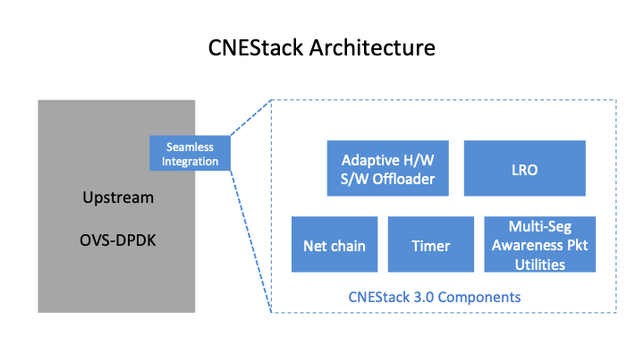

CNEStack 3.0¶
CNEStack is a software solution for accelerating virtual switches. It’s derived from CloudNetEngine vSwitch release by modulizing the key techniques thus can be applied to other virtual switches, and it provides the best performance offloading solution in the industry.
Architecture¶
CNEStack has a flexible architecture to build various functionalities, and it can be easily and seamlessly integrated with upstream OVS-DPDK.
Offloading Key Features¶
Hardware Software Adaptive VLAN/QinQ
Hardware Software Adaptive L4 CKSUM
Hardware Software Adaptive L4 CKSUM Over Tunnel
Hardware Software Adaptive TSO
Hardware Software Adaptive TSO Over Tunnel
Hardware Software Adaptive Tunnel Outer UDP Checksum
Software LRO
Software UFO
Software UFO over tunnel
Performance Comparison¶
The performance comparison is done by open source CNE-OVS-SIT, and OVS-DPDK source code is base on recent 2.16 branch. VXLAN virtual network Iperf performance is evaluated on two hosts connected by Intel XL710 40G links.
Note
Upstream OVS-DPDK is long criticized for lack of overlay offload capabilities,
userspace-tso-enable must be False for VXLAN deployment.
Evaluation¶
Welcome to evaluate CNEStack 3.0, please refer to CNEStack 3.0 Evaluation Guide.